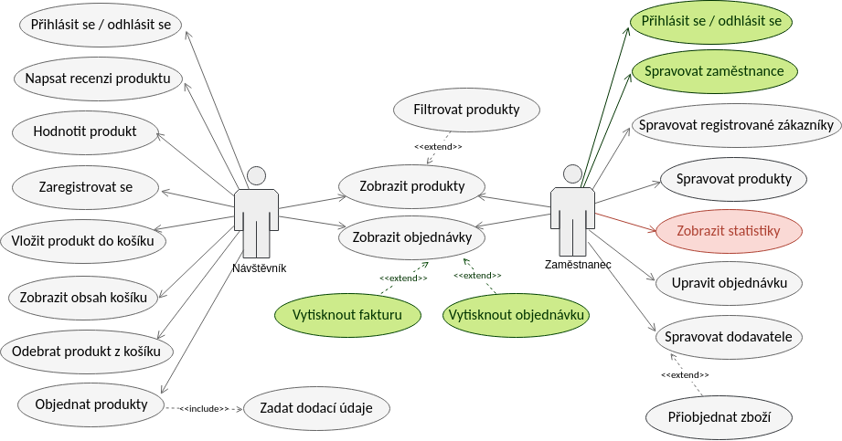

Internetový obchod s pastelkami a skicáky
- Autoři
- Vladan Kudláč
xkudla15@stud.fit.vutbr.cz -
uživatelské rozhraní, db, návrh
- Marek Musil
xmusil65@stud.fit.vutbr.cz -
uživatelské rozhraní, db
- URL aplikace
- http://kudlac.tode.cz/iishop/www/
- http://kudlac.tode.cz/iishop/www/administrace - administrace
Uživatelé systému pro testování
| Login | Heslo | Role |
|---|
| admin | admin | Správce |
| vokoun | vokoun | Prodavač |
| pkapr | 1234 | Zákazník |
Implementace
Systém je rozdělen do dvou hlavních modulů, AdminModule a FrontModule. Jak z názvů napovídá, AdminModule je administrace a FrontModule je eshop samotný. Architektura se řídí dle model-view-presenter, kde je kód logicky rozdělen na model, view, presenter.
- Model - práce s daty, dotazy na DB
- View - UI, které je naplněno daty
- Presenter - má na starost zpracování view eventů a dotazovat se na model, vykreslení komponent.
Use Case Diagram

FrontModule
Část systému, kterou vidí zákazník a pracuje s ní. Modul se skládá z presenterů, formulářů a pohledů. Modely jsou společné pro FrontModule i AdminModule.
Ve složce modulu se nachází složky forms a presenters. Každý formulář je vlastní třída, stejně tak jako presentery jsou samostatné třídy. Ve složce presenters se dále nachází šablony pro HTML samotné.
Stručný popis presenterů
Názvy tříd jsme záměrně volili tak, aby bylo z nich co nejvíce jasné, co může mít na starost.
- BasePresenter - Abstraktní třída, sloužící jako základ pro jednotlivé presentery.
- Error4xxPresenter - presenter použitý při HTML chybách 4xx
- ErrorPresenter - Zpracování chyb
- HomepagePresenter - Úvodní strana
- InfoPresenter
- ProductPresenter - Presenter pro konkrétní produkt, zobrazení informací o produktu, přidání do košíku, recenze
- RegisterPresenter - Registrace uživatele
- SignPresenter - Přihlášení uživatele
- UserPresenter - inforace o uživateli, jeho košík, objednávky.
AdminModule
Struktura složky mobulu je stejná jako u FrontModule. Obsahuje formuláře, presentery a šablony.
Stručný popis presenterů
Podobně jako u FrontModule.
- BasePresenter - Abstraktní třída, sloužící jako základ pro jednotlivé presentery.
- CustomersPresenter - Funkce spojené se zákazníky. Výpis zákazníků, možnost kontaktu, editace karty zákazníka, jeho smazání či deaktivace. Vytvoření nového zákazníka.
- EmployeesPresenter - Výpis zaměstnanců a jejich rolí, editace karty zaměstnance, smazání, či deaktivace. Vytvoření nového zaměstnance.
- HomepagePresenter - Úvodní strana, jako výchozí jsou zobrazené objednávky.
- OrdersPresenter - Seznam objednávek a operace s nimi spojené. Zobrazení, kontaktování zákazníka, smazání objednávky.
- ProductsPresenter - Seznam produktů a informací o nich. Zobrazení karty produktu, jeho editace, deaktivace a smazání. Přidání nového produktu.
- SignPresenter - Přihlašování do administrace.
- SuppliersPresenter - Seznam dodavatelů, možnost editace jeho karty, či smazání. Přidání nového dodavatele.
Model
Složka model obsahuje třídy modelu. Tedy pro jednotlivé logické celky, každá třída má množinu metod, které se dotazují na databázi a komunikují s presentery.
Popis modelů
- CartManager - Model pro košík. Práce s tabulkou `vlozil_do_kosiku`. Přidávání, odebírání zboží do/z košíku, zobrazení obashu košíku.
- EmailValidator - Validace e-mailu, kontrola existence v databázi.
- EmployeeAuthenticator - Autentizace uživatele (zaměstnance).
- EmployeeManager - Operace nad tabulkou `zamestnanec`. Zobrazení všech zaměstnanců, zobrazení a editace údajů o konkrétním zaměstnanci. Přidání nového, smazání existujicího.
- OrderManager - Operace nad tabulkou `objednavka`. Vytvoření nové objednávky, zobrazení objednávek uživatele, zobrazení všech dle stavu
- ParameterManager - Zobrazení parametrů produktu.
- Parameters - Přístup k parametrům ze souboru `app/config/config.neon`
- ProductManager - Operace nad tabulkami `produkt`, `ohodnotil`, `upresnuje`. Vytvoření nového produktu, editace existujícího, smazání produktu, deaktivace produktu.
- Registrator - Vytváření nového uživatele.
- SupplierManager - Operace nad tabulkou `dodavatel`. Zobrazení dodavatelů, jejich editace, smazání, vytvoření nového.
- UserAuthenticator - Autentizace uživatele(zákaznika).
- UserManager - Operace nad tabulkou `zakaznik`. Zobrazení zákazníků, vytváření nových zákazníků, editace údajů, mazání, deaktivace.
Změny oproti původnímu ERD
Ačkoliv jsme se znažili schéma databáze už v IDS navrhnout tak, aby bylo co nejvíce použitelné pro použití systémem, neobešlo se bez pár menších úprav.
Tyto úpravy jsou v ERD.pdf vyznačeny žlutým zvýrazňovačem. Jedná se hlavně o přidání dalších řádků do tabulek, případně změny datových typů.
Instalace
- Po instalaci potřebného SW, je zapotřebí nainstalovat Nette Framework. K tomu slouží příkaz `composer install`. Po nainstalování Nette, by za předpokladu správně nastaveného serveru a importované databáze, měl být echop funkční.
- Softwarové požadavky:
- PHP 7.2 a novější
- Composer
- Nette Framework 2.4
- Šablonovací systém Latte
- MariaDB 10.3 nebo ekvivalentní MySQL databázový server
- Nastavení DB
-
Konfigurace připojení k databázi se nachází v souboru `app/config/config.local.neon`
Známé problémy
Z časových důvodů nebyla implementována funkce statistik prodeje produktů.